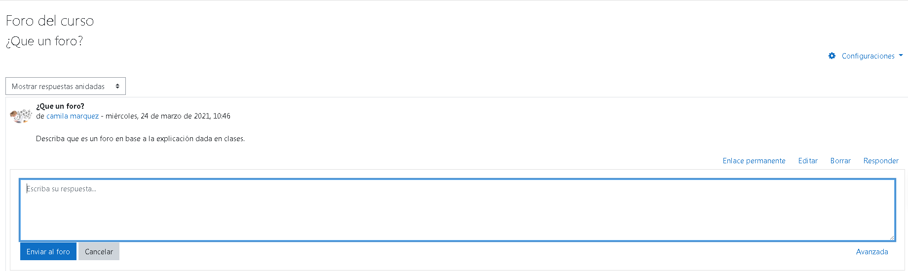

Foro del curso
Foro del curso para preguntas y respuestas.
¿Qué es un foro de Moodle?
El módulo de foro es una actividad donde los docentes y alumnos intercambian ideas al publicar comentarios, por tanto, permite a los participantes tener discusiones asincrónicas, es decir discusiones que tienen lugar durante un período prolongado de tiempo.
Foros
Esta actividad tal vez sea la más importante. Es a través de los foros donde se da la mayor parte de los debates y discusión de los temas del curso. Se dice que esta actividad es a sincrónica ya que los participantes no tienen que acceder al sistema al mismo tiempo. Su icono estándar es: 
Los foros pueden estructurarse de diferentes maneras, y cada mensaje puede ser evaluado por los compañeros. Los mensajes también se pueden ver de varias maneras, incluir mensajes adjuntos e imágenes incrustadas. Al suscribirse a un foro los participantes recibirán copias de cada mensaje en su buzón personal de correo electrónico. El profesor puede forzar la suscripción a todos los integrantes del curso si así lo desea.
Los foros presentan dos categorías:
-
Foro general (Se encuentra en la sección 0 del curso)
-
Foro de aprendizaje (Son foros de alguna sección específica del curso).
Los foros se muestran con los siguientes cabeceras:
-
Foro (Nombre del Foro)
-
Descripción
-
Temas (Número de asuntos o hilos de debate abiertos)
-
Mensajes no leídos
-
Rastrear (Si es Sí nos marca los mensajes no leídos)
-
Suscrito (Nos indica se recibiremos o no los mensajes en nuestro correo electrónico)
-
RSS (Ver la información sobre los canales RSS en los foros)
Esta opción nos permite habilitar los canales RSS en este foro. Podemos escoger entre dos tipos de foros:
-
Debates: Con esta opción, los datos generados incluirán nuevas discusiones en el foro con su mensaje inicial.
-
Mensajes: Con esta opción, los datos generados incluirán cada nuevo mensaje en el foro.
Las Actividades en los foros pueden contribuir significativamente a una comunicación exitosa y la construcción de una comunidad en línea. Puede usar los foros para muchos propósitos innovadores en el sector educativo, pero podría decirse que los foros de enseñanza y estudiantes tienen más de dos diferencias significativas.
Foro de Novedades
Los cursos de Moodle automáticamente generan un Foro de Novedades que por defecto suscribe a todos los participantes del curso. El nombre del Foro de Novedades se puede cambiar a algo más apropiado, como ‘Anuncios importantes’ o similar. Esta es una característica útil y muchos usan este foro en un curso de Moodle para anunciar fechas de examen, horarios o cambios en exámenes, clases o seminarios, así como información importante sobre el trabajo del curso a lo largo del trimestre o anuncios especiales relacionados con acontecimientos.
Vista del debate del foro

Licencia: licencia propietaria intelectual